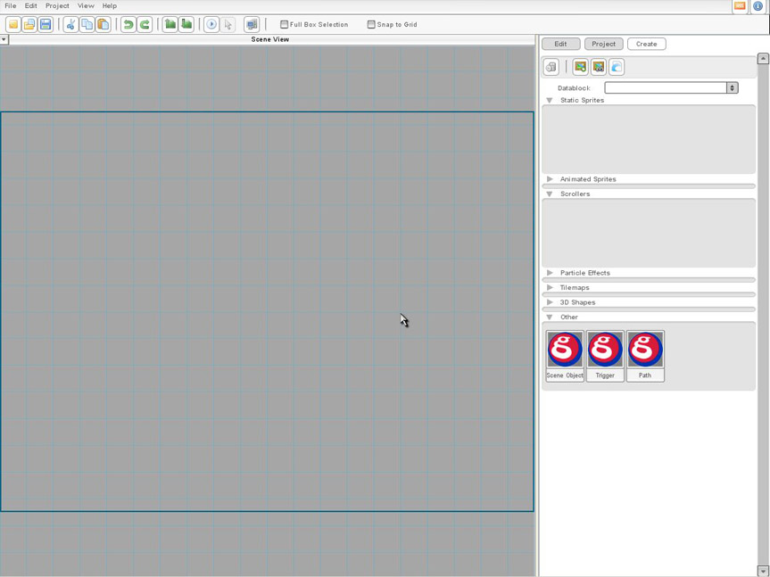

Torque 2D - Fish Game Tutorial - Part 1
Introduction
Welcome to the Torque 2D Fish Game Tutorial. This tutorial set will take you through creating a very simple fish themed game in Torque 2D. This tutorial is ideal for those new to coding and/or scripting as well as those who are familiar with it and are just new to Torque 2D (T2D). This is divided into multiple steps with each step being a different document, that way it should be easy to follow and pick up at a later time.
1. Starting Out
Our first step is to create a new project in Torque 2D. To do this we must first open T2D. After loading the application you should be presented with the T2D Level Builder. Make a new project and name it "MyFishGame" using the Empty Game project template.

Figure 1.1.3
We have successfully completed the first step in our Fish Game! We now have a new project and the proper images loaded into the Level Builder to begin creating our level and fish, in our next step we will setup keys to control the movement of a fish.